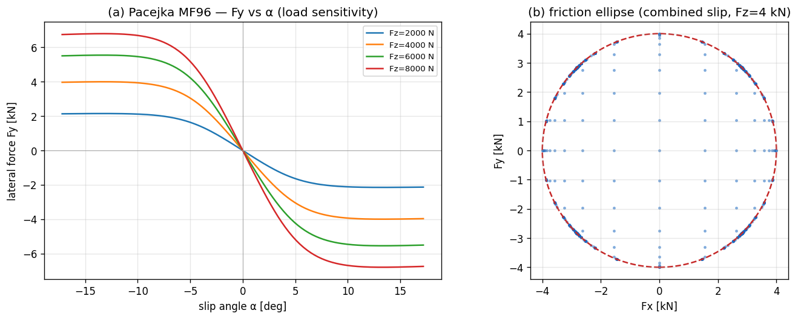
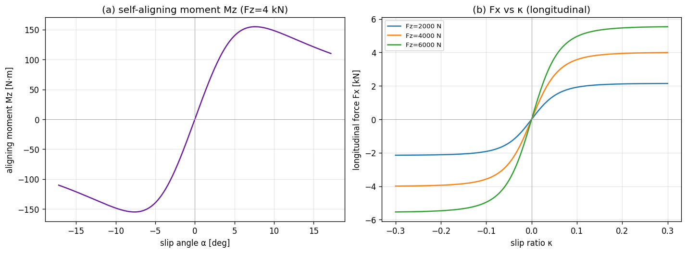

03. Tire Model — Pacejka Magic Formula 1996¶
Learning objectives¶
이 chapter 를 마치면 다음을 할 수 있다.
- Magic Formula
F(s) = D sin(C atan(B s − E (B s − atan(B s))))의 각 계수B / C / D / E의 물리적 역할을 독립적으로 설명한다. - Pure-slip 모델과 combined slip 의 차이를 friction-ellipse rescale 의 가정 위에서 유도한다.
- Aligning moment
Mz와 pneumatic trailt_p의 정의로부터 self-aligning 효과를 부호와 함께 설명한다. - Load sensitivity / relaxation length / camber thrust 의 세 가지 확장이 어떤 실험적 현상을 모델링하는지 안다.
- MF96 simple form 과 MF2002 full form 의 trade-off (parameter 수, 발산 처리, 구현 복잡도) 를 비교한다.
Prerequisites¶
- Chapter 01 — slip angle
α/ slip ratioκ의 ISO 8855 정의. - Chapter 02 — body frame 의 force / moment 합산.
- 외부 reference — Pacejka §4 (Magic Formula derivation), Milliken & Milliken §2 (tire force fundamentals).
3.1 동기 — 타이어가 비선형 핵심인 이유¶
차량 동역학은 본질적으로 타이어 한계 동역학이다. 정상 운전 (linear region) 에서는 거의 모든 차량이 비슷하게 거동한다. cornering / brake / traction 한계는 모두 타이어의 비선형 saturation 에서 결정된다.
vehicle dynamics 의 sensitivity 를 비교해 보면, mass / wheelbase / aero 보다
tire 의 (D, μ, Cα) 에 훨씬 강하게 의존한다. Pacejka 가 타이어 modeling 에
한 평생을 쓴 이유다.

위 그림은 본 시리즈가 채택한 Pacejka 모델의 실제 출력이다. load sensitivity
(Fz = 8 kN 의 peak 가 4 kN 의 1.7 배 — 선형이면 2 배) 와 friction ellipse 의
boundary saturation 이 함께 보인다.
3.2 가정¶
본 chapter 의 모든 식은 다음 가정 위에서 유도된다.
| 가정 | 의미 | 깨지는 case |
|---|---|---|
| Quasi-static (instantaneous slip → force) | linear region 의 정상 모델 | step steer / brake 의 transient (§3.9) |
| Combined slip = friction ellipse | pure-slip case 의 backward-compat 보장 | MF2002 의 unified σ_x, σ_y |
| Constant μ over temperature | tire warming 무시 | race / endurance |
Camber γ 는 외부 입력 (forward only) |
suspension geometry → tire force 단방향 | Compliance 가 force → camber 로 되먹임 |
Aligning moment = −t_p · Fy + camber 보정 |
pneumatic trail 의 단순 falloff | MF2002 의 residual Mzr |
Load sensitivity 선형 (μ_eff(Fz) linear) |
reference Fz 부근 양호 | 극단 Fz 의 non-linear curve |
가정이 깨지는 case 의 모델 확장은 §3.11 한계 표에서 정리한다.
3.3 Magic Formula 의 모양¶
기본형:
여기서 s 는 입력 — lateral 의 경우 slip angle α, longitudinal 의 경우 slip
ratio κ. (이 simplified BCDE 형 외에, 실측 .tir 계수셋을 쓰는 full MF2002
평가기가 §3.16 에 있다.) 네 계수의 역할:
| 계수 | 역할 | 단위 / 영향 |
|---|---|---|
D |
peak force amplitude | D = D_param · F_z · μ |
B |
stiffness factor | linear-region slope = B · C · D |
C |
shape factor | 곡선의 폭 / 비선형 정도 |
E |
curvature factor | peak 주변의 형상 |
왜 sin(atan(...)) 인가¶
atan(B·s) 는 s → ∞ 에서 π/2 로 saturate. sin(C · π/2) 가 1 이면 peak 위치
결정. 두 함수를 합치면 다음 세 성질을 한 식으로 표현한다:
- 작은
s에서 linear (slope =B·C·D), - peak 후 자연스러운 descent (sliding 영역),
D가 peak 값.
타이어의 force-slip 곡선은 작은 slip 에서 linear, 중간에서 peak, 큰 slip 에서
sliding 영역으로 감소한다. sin(atan) 이 이 모양을 4 parameter 로 표현하는 가장
간결한 함수 family.
E 항의 역할¶
B s − E (B s − arctan(B s)) 의 두 번째 항 (B s − arctan(B s)) 는 s > 0
영역에서 항상 양수 (atan 이 항상 더 작음).
E < 1이면 inner argument 가 커져서 peak 가 더 sharp.E > 1이면 over-saturation — 일부 race tire 의 sharp peak 표현.
3.4 ISO 8855 lateral 의 부호¶
Pacejka 의 lateral 식을 ISO 8855 RH 부호 약속과 일치시키면:
leading minus 부호의 정당화:
α > 0(좌선회 시 wheel velocity 가 wheel frame 의+y쪽으로 기울어진 상황)- 타이어가 restoring force 를
−y방향으로 생성 →Fy < 0 - 즉 leading minus 가 ISO 8855 좌선회의 restoring 부호를 자동 부여
SAE J670 convention 의 책 (Rajamani 등) 은 같은 좌선회의 α 부호가 반대이므로
leading minus 없이도 동일한 부호 결과가 나오게 식이 짜여 있다. 외부 식을 옮길
때는 ISO 8855 / SAE 식별을 항상 우선 확인한다.
3.5 Combined slip — friction ellipse rescale¶
문제¶
Pure-slip 의 Fx(κ) 와 Fy(α) 가 동시에 비-zero 일 때, 단순 합 (Fx, Fy) 의
크기가 friction circle 의 한계 μ · Fz 를 넘을 수 있다. 실제 타이어는 합력이
friction limit 내부에 머무르므로 어떤 cap 이 필요하다.
해법 — friction-ellipse rescale¶
각 축의 peak:
Pure-slip force (F_{x,\text{pure}}, F_{y,\text{pure}}) 의 normalized magnitude:
Rescale rule:
(Fx_max = Fy_max) 이면 circle, 일반적으로 ellipse. 내부면 그대로 두고, 외부면
가장 가까운 ellipse boundary 로 끌어당긴다.
왜 단순 rescale 이 OK 인가¶
Pure-slip case (κ = 0 또는 α = 0) 에서는 한 축의 force 가 0 이라
r² ≤ 1 이 항상 보장 → rescale 발생 안 함. 즉 friction-ellipse rescale 은
모든 pure-slip 식의 backward-compat 을 깨지 않는다.
MF2002 의 unified 모델 (비교)¶
MF2002 는 normalized slip σ_x = κ / (1 + κ), σ_y = tan(α) / (1 + κ) 으로
통합한 한 식으로 푼다. 더 정확하지만:
κ = -1의 brake-locked 발산 처리 필요,- 파라미터가 5 개 추가,
- 구현 복잡도가 크게 증가.
MF96 + friction-ellipse rescale 은 단순 모델이 충분한 영역의 합리적 trade-off.

3.6 Aligning moment Mz¶
정의¶
타이어가 받는 lateral force Fy 의 application point 가 contact patch 중심에서
t_p (pneumatic trail) 만큼 뒤에 있다. 즉:
부호 확인 — α > 0 일 때 Fy < 0 (§3.4) → Mz > 0 (위에서 본 CCW). 즉 wheel
이 α 가 줄어드는 방향으로 회전하는 self-aligning 모멘트.
t_p 의 falloff¶
low α 영역: t_p ≈ t_{p,0} (constant, 보통 약 50 mm). α 가 커지면 contact
patch 의 pressure distribution 이 앞쪽으로 이동 → t_p 감소. 본 시리즈의 채택:
이는 cos(arctan(α / α_falloff)) 와 등가. 단순하지만 textbook 의 일반 trend
(α 작을 때 거의 일정, 큰 α 에서 단조 감소) 를 잘 표현한다.
차량 yaw moment 로의 합산¶
Mz_wheel 은 steering 시스템을 통해 chassis 의 yaw moment 에 더해진다. 차량
body frame 의 총 yaw moment:
첫 항이 wheel 위치의 lever arm 효과, 두 번째 항이 per-tire self-aligning 의 합. linear-bicycle 의 해석해는 두 번째 항을 무시하므로, simulator vs analytical 차이가 \(M_z\) 만큼 발생하는 것은 model-mismatch (구현 bug 아님).
3.7 Camber thrust 와 camber Mz¶
정의¶
Wheel 이 vertical 에서 γ 만큼 기울었을 때 추가 lateral force 가 생성된다.
C_γ 는 camber stiffness coefficient. γ 양의 부호는 wheel 의 top 이 vehicle
center 쪽으로 기우는 방향 (ISO 8855).
Camber 가 Mz 에도 기여¶
Camber thrust 의 application point 도 contact patch 중심에서 약간 벗어나 작은 aligning moment 를 만든다.
k_camber-arm ≈ 0.25 가 contact patch 길이의 약 ¼ (실험적 근사). 결과:
γ 에 anti-symmetric — ±γ 가 ∓ M_z 를 만들고, α = 0 에서도 γ ≠ 0 이면
Mz ≠ 0.
γ 의 source¶
γ 는 tire model 의 외부 입력. 어디서 오는가는 dynamics 사다리에 따라 다르다:
| 모델 | γ source |
|---|---|
| Ld1 (bicycle, chapter 04) | γ = 0 고정 |
| Ld2 (7-DOF, chapter 05) | legacy: camber_per_roll · φ 의 roll-linear 근사 또는 γ = 0 |
| Ld3 (14-DOF, chapter 06) | suspension travel + camber gain table |
| Ld4 (hardpoint, chapter 14) | hardpoint kinematics 의 정확 계산 |
즉 chapter 14 의 hardpoint kinematics 가 attach 되면 geometry-driven camber 가
가능하고, 안 되면 legacy fallback. tire model 자체는 input γ 를 받아 forward
계산할 뿐 source 와 무관하다.
3.8 Load sensitivity — μ 가 Fz 에 따라 감소¶
실제 타이어는 수직 하중이 클수록 단위 하중당 grip 이 감소한다 (rubber 의 load sensitivity). 모델:
극단 Fz 에서 수치 안정 위해 μ_eff ≥ 0.3 · μ_nominal 의 floor 적용. 결과:
Fz = Fz_nominal이면μ_eff = μ_nominal.Fz > Fz_nominal이면 grip 감소 → cornering 시 외측 wheel 이 안쪽보다 상대적으로 덜 받쳐줌 → 자연스러운 lateral load transfer 효과의 일부.k_load = 0이면 legacy (peak 가Fz에 비례).
전체 force 식에 통합:
μ_long, μ_lat 는 contact point 에서 받는 surface friction (per wheel) — 노면
변화 (icy patch 등) 표현.
3.9 Relaxation length — slip 의 1차 지연¶
Quasi-static 모델은 slip 이 바뀌면 force 가 즉시 따라간다. 실제 타이어는 carcass
변형 때문에 일정 rolling distance σ 만큼 지연된다 (relaxation length).
Transient slip 의 1차 ODE¶
Transient slip angle α_dyn 이 geometric slip α_geom 을 1차 시스템으로
추종:
Force 는 α_dyn 으로 계산 (instantaneous α 가 아니라). 시상수 τ = σ / |v|
이므로, 속도가 빠를수록 더 빠르게 build-up.
Closed-form substep update¶
Substep h 동안 α_geom 이 상수라 가정하면 closed-form 적분이 가능하다:
이는 explicit Euler 보다 안정적이고, large h 에서도 발산하지 않는다.
구현 위치¶
Relaxation 의 state (α_dyn) 는 tire model 이 아니라 host dynamics 에 둔다. 즉
ITireModel::compute 는 stateless 를 유지하고, dynamics 가 매 substep
α_dyn 을 업데이트 한 후 tire model 에 넘긴다. 이렇게 하면 tire model 의 thread
safety 와 reentrancy 가 유지된다.
Alternative (VDSim opt-in): Chapter 19 (LuGre / brush-dynamic tire)
replaces the algebraic slip map with bristle states \(z\) and uses MF96 as the
steady envelope \(g(\cdot)\). It can subsume both quasi-static slip and low-speed
stick without a kinematic blend when lugre.enabled: true.
3.10 검증 전략¶
본 chapter 의 식은 다음과 같이 자동 검증한다.
| 검증 | 식 / 케이스 |
|---|---|
| Boundary | α = 0 → Fy = 0, Fz = 0 → F = 0 |
| Linear-region slope | α = 1e-4 에서 Fy / α ≈ −B·C·D·Fz·μ (±1 %) |
| 부호 약속 | α > 0 → Fy < 0, κ > 0 → Fx > 0 (§3.4) |
| Peak bound | sweep [-0.5, 0.5] 에서 |Fy| ≤ Fz · μ · D_lat · (1 + ε) |
| μ 스케일 | linear region 에서 Fy ∝ μ |
| Fz 스케일 (linear region) | Fz/2 → Fy/2 |
| Friction ellipse bound | combined slip 격자 sweep 에서 (Fx/Fmax)² + (Fy/Fmax)² ≤ 1 + ε |
| Pure-slip backward-compat | combined flag 토글이 pure case 의 force 안 바꿈 |
| Mz 의 부호 / 영점 | α = 0 → Mz_no-camber = 0, sign(Mz) = -sign(Fy) |
| Mz linear region | α = 1e-4 에서 Mz ≈ -t_p · Fy |
| Mz 의 falloff | |Mz/Fy|_large_α < |Mz/Fy|_small_α |
| Camber Fy 가산 | γ ≠ 0, α = 0 에서 Fy_camber ≠ 0 |
| Load sensitivity | Fz = 2·Fz_nominal 에서 Fy ratio < 2 (default config 에서 ≈ 1.6) |
| Relaxation 지연 | step α_geom 입력 시 t = σ/v 에서 Fy < 0.85 · Fy_steady |
세부 unit test 매핑은 §3.14 implementation note 참조.
3.11 한계¶
| 항목 | 본 모델 | 한계 |
|---|---|---|
| Combined slip | friction-ellipse rescale | MF2002 의 unified σ_x, σ_y 가 더 정확 |
| Aligning moment | −t_p · Fy + Mz_camber |
MF2002 의 residual Mzr 누락 |
| Camber | linear Fy_camber, linear Mz_camber |
non-linear (peak μ 의 camber 의존) |
| Load sensitivity | linear μ_eff(Fz) |
non-linear load curve |
| Transient | lateral 만 1차 relaxation | longitudinal relaxation 누락; see Ch.19 LuGre brush |
γ source |
Ld4 hardpoint kinematics 가 forward 계산 | force → camber 의 compliance feedback 없음 |
| Temperature | constant μ | tire warming, thermal evolution |
| Fz peak shift | constant B/C/E, μ_eff 만 Fz 의존 | Fz-dependent B/C/E |
| Camber-Fx | 무시 | 일부 race tire 에서 의미 |
3.12 다음 chapter 와의 연결¶
Tire force model 이 정의되었으므로, chapter 04 (Ld1 bicycle) 에서 이 model 을
single-track + per-axle Fz 에 통합한다. 본 chapter 의 (F_x, F_y, M_z) 가 wheel
frame 에서 정의되었음을 기억하고, chapter 04 에서 body frame 으로 회전시켜
사용한다.
Chapter 05 (Ld2 7-DOF) 부터는 per-wheel tire model 을 4 번 호출하고 lateral load transfer + Ackerman + differential 을 결합한다. Camber 의 source 는 chapter 06 (Ld3) 또는 chapter 14 (Ld4 hardpoint).
3.13 참고문헌¶
- Pacejka, H.B. Tire and Vehicle Dynamics, 3rd ed., Butterworth-Heinemann, 2012. §4 (Magic Formula derivation), §6 (Combined slip), §7 (Mz, Mzr).
- Genta, G. Motor Vehicle Dynamics, World Scientific, 2014. §3.4-3.6 (tire models survey).
- Milliken, W.F. & Milliken, D.L. Race Car Vehicle Dynamics, SAE International, 1995. §2 (tire force fundamentals, empirical 관점).
3.14 Self-check¶
1. B / C / D / E 중 linear-region slope 와 peak force 에 각각 영향을 주는 것은?
- linear-region slope = `B · C · D`. 세 계수가 모두 곱으로 들어간다.
- peak force = `D`. peak 의 절대값은 `D = D_param · F_z · μ` 에 의해서만 결정.
- `E` 는 peak 부근의 형상만 변화 (sharp 한지 round 한지).
2. ISO 8855 RH 에서 Fy 식의 leading minus 가 정당화되는 부호 추적 과정은?
좌선회 → `α > 0` (§1.5 의 부호 직관). 타이어가 restoring force 를 `-y_wheel`
방향으로 생성하므로 `Fy < 0` 이어야 함. Magic Formula 의 `sin(C atan(...))` 의
inner 가 `α > 0` 에서 양수이므로, 그 자체로는 `Fy > 0`. ISO 의 부호 약속과 맞추기
위해 leading minus 가 필요. SAE Y-right convention 의 책에서는 같은 좌선회의 `α`
가 음수이므로 leading minus 없이 동일한 결과가 나오게 식이 짜여 있다.
3. Friction-ellipse rescale 이 pure-slip case 에서 backward-compat 한 이유는?
Pure-slip 은 `κ = 0` 또는 `α = 0` 의 case. 한 축의 pure force 가 0 이라 `r²` 의 한 항이 0. 다른 항 (예: `Fy_pure / Fy_max`) 은 individual peak 에 의해 정의상 `|·| ≤ 1`. 즉 `r² ≤ 1` 이 항상 성립 → rescale 발생 안 함.4. Mz 가 self-aligning 인 이유를 부호 단계별로 추적하면?
1. 좌선회 → `α > 0`.
2. `Fy < 0` (§3.4 의 leading minus).
3. `Mz_wheel = -t_p · Fy = -t_p · (음수) = 양수`.
4. 위에서 본 CCW (`+Mz`) → wheel 을 `α` 가 줄어드는 방향으로 (즉 vehicle 의
진행 방향으로 다시 align) 회전시킴.
따라서 자체적으로 `α` 를 0 쪽으로 회복시키는 *self-aligning* 효과.
5. Relaxation length σ 의 시상수가 v 에 따라 어떻게 변하나? 왜?
`τ = σ / |v_long|`. 즉 **속도가 빠를수록 시상수가 짧고 force build-up 이 빠름**.
이유: relaxation 은 "carcass 가 rolling distance `σ` 만큼 굴러야 force 가
80 % 도달" 의 *거리* 단위 지연. 같은 거리를 통과하는데 걸리는 시간이 속도의 역수.
따라서 `τ ∝ 1/v`.
직관: 시속 60 km/h 에서 step steer 시 약 36 ms 의 lag, 시속 30 km/h 에서 같은
maneuver 의 lag 가 두 배.
3.15 VDSim 구현 노트¶
본 chapter 의 모델을 VDSim 코드가 따르는 방식. 본문 의존 없이 skim 가능.
[VDSim impl] § 3.3 — Default coefficient (
default_pacejka.yaml)B_long = 10.0, C_long = 1.65, D_long = 1.0, E_long = +0.97 B_lat = 8.0, C_lat = 1.30, D_lat = 1.0, E_lat = -1.00
E_lat = −1가 음수인 이유: lateral 곡선이 peak 후 더 sharp 하게 떨어지도록.[VDSim impl] § 3.4 — Pacejka MF96 본체 코드
core/src/pacejka_mf96.cpp:42-48:{ const double s = in.alpha; const double t = tp_.B_lat * s; const double phi = t - tp_.E_lat * (t - std::atan(t)); out.Fy = -Dy * std::sin(tp_.C_lat * std::atan(phi)); }[VDSim impl] § 3.6 — Mz aggregation 코드
core/src/seven_dof_dynamics.cpp:336-340:for (int i = 0; i < NUM_WHEELS; ++i) { Mz_total += r_x[i] * F_body[i].y() - r_y[i] * F_body[i].x(); } for (int i = 0; i < NUM_WHEELS; ++i) { Mz_total += mz_wheel[i]; }step_steer 의 SS yaw rate 가 analytical (Mz 무시) 대비 약 2.6 % 감소 (model-mismatch, bug 아님).
[VDSim impl] § 3.7 — Camber 의 Ld4 연결 경로
- Ld3 (
fourteen_dof_dynamics.cpp) 가 매 substep per-wheel travel 을ISuspensionKinematics::compute로 보내γ를 받음.inner_->set_camber_per_wheel(γ)로 Ld2 (seven_dof_dynamics.cpp) 에 전달.- Ld2 가 Pacejka
in.gamma = camber_ext_[i]로 호출.Hardpoint kinematics 가 attach 안 됐으면 legacy fallback (
camber_per_roll · φ) 또는γ = 0. Backward-compat 유지 + geometry-driven camber 가능. 상세: chapter 14 §14.8.[VDSim impl] § 3.8 — Load sensitivity config
default_pacejka.yaml:검증
LoadSensitivityFadeAtHighFz:2 · Fz에서 Fy ratio = 1.6 (선형이면 2.0).[VDSim impl] § 3.9 — Relaxation length config + state
default_pacejka.yaml:시상수 =
σ / v→v = 15 m/s에서τ ≈ 40 ms.
3.16 Full Magic Formula (.tir) — measured-data path¶
본 chapter 의 식들은 simplified MF96 형(BCDE 4-계수 + friction-ellipse)이다.
한계주행·실측 대응이 필요하면 VDSim 은 full Magic Formula (Pacejka 2002 /
MF-Tyre 5.2 coefficient set) 평가기를 별도로 제공한다 — 표준 .tir property
파일을 읽어 pure + combined slip \(F_x, F_y\) 와 aligning \(M_z\) 를 평가.
generic 구조 (계수 값이 아니라 식 형태만 — 값은 §보안 주의):
- pure slip: 각 방향이 같은 BCDE 형이되 계수가 \(F_z\)·camber 의존 다항식 (\(p_{Dx1}, p_{Dx2}, p_{Ky1}, \dots\)). \(D = \mu(F_z)\,F_z\), \(B = K/(C D)\) 등.
- combined slip: pure \(F_{x0}, F_{y0}\) 에 가중함수 \(G_{x\alpha}, G_{y\kappa}\) 와 \(S_{Vy\kappa}\) 를 곱해 상호 영향을 표현 (friction-ellipse 의 일반화).
- aligning \(M_z\): pneumatic trail \(t(\alpha)\) + residual \(M_{zr}\) + 등가 slip, \(M_z = -t\,F_y + M_{zr}\).
- scaling coefficients (\(\lambda\)): 계수셋을 일괄 보정.
- turn-slip·inflation·thermal block 은 범위 밖 (isothermal coefficient set).
파서는 계수를 이름→값 map 으로 저장(대소문자 무시)해 어떤 optional 계수가 있든 agnostic; 평가기는 이름으로 default 와 함께 pull 한다.
[VDSim impl] § 3.16 — full MF 코드 + 보안
core/include/vdsim/magic_formula.hpp,core/src/magic_formula_tire.cpp:parse_tir()→MFCoeffs,create_magic_formula_tire(coeffs)/create_magic_formula_tire_from_tir(path). Ld1/Ld2/Ld3 factory 에create_*_from_tir(path)로 주입.보안:
.tir의 계수 값은 대외비일 수 있다..tir파일과 계수 dump 는 repo 밖(.gitignore)에 두고, 소스에는 평가 식만 존재한다.State 위치: tire model 이 아니라 host dynamics.
seven_dof_dynamics와bicycle_dynamics의 멤버alpha_dyn_[4]. tirecompute()는 stateless 유지. 검증RelaxationLengthDelaysLateralForce:t = σ/v시점 Fy 가 instant 대비 < 85 %.[VDSim impl] § 3.10 — Tire API 사용 패턴
ITireModel::Input in; in.Fz = Fz_axle / 2; // per tire in.kappa = (R * omega - vx_wheel) / std::max(std::abs(vx_wheel), 0.5); in.alpha = std::atan2(vy_wheel, vx_wheel); in.mu_long = contact.mu_long; in.mu_lat = contact.mu_lat; in.Vx_wheel = vx_wheel; in.gamma = 0.0; // Ld2-Ld3: 0, Ld4+: kinematics-driven const auto F = tire_->compute(in); // F.Fx, F.Fy in wheel frame. steered wheel 은 body frame 으로 회전.이 호출이 차량 EoM 의 모든 lateral / longitudinal force 의 source.
[VDSim impl] § 3.10 — 검증 unit test
검증 test 파일 / 케이스 Boundary, linear region, 부호 tests/unit/test_tire_models.cpp의ZeroSlipZeroForce,ZeroFzZeroForce,LinearRegionLateralSlope,LinearRegionLongitudinalSlope,SignConventionsPeak bound, μ / Fz 스케일 PeakBoundedByFzMu,MuScalesLinearly,FzScalesLinearlyInLinearRegionFriction ellipse PacejkaCombinedFixture::FrictionEllipseBound(1024 점, ±1e-9)Pure-slip backward-compat PureSlipUnchangedByCombinedFlagMz MzZeroWhenAlphaZero,MzSignOppositeFy,MzLinearRegionMatchesPneumaticTrail,MzDecreasesAtLargeAlphaCamber CamberAddsLateralForce,CamberContributesToMz,CamberZeroByDefaultLoad sensitivity LoadSensitivityFadeAtHighFzRelaxation RelaxationLengthDelaysLateralForce